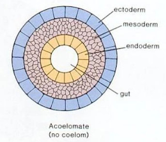
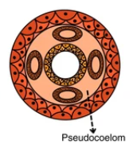
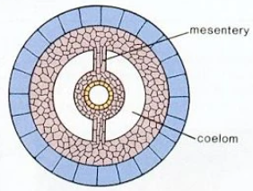

🦀 Introduction to Non-Chordates: Important Questions & PYQs
Master the Basis of Classification and General Characteristics of Non-Chordates for your exams. This dedicated resource provides highly repeated Previous Year Questions, the most Important topics, and detailed solutions tailored specifically for students to build a solid foundation in Non-Chordates.
About Unit-1: Introduction to Non-Chordates
Introduction to Non-Chordates is the foundational first unit of the Non-Chordates paper studied under the first semester of BSc Zoology Hons at Delhi University (DU). This crucial unit establishes the core principles of animal taxonomy and the architectural frameworks used to classify the vast diversity of invertebrate life.
In this unit, students explore fundamental biological concepts that serve as the basis for dividing the animal kingdom. Key topics covered include the grades of organization, understanding body planes through Radial and Bilateral Symmetry, the evolutionary significance of the body cavity (categorizing animals into Acoelomates, Pseudocoelomates, and Eucoelomates), and the structural importance of Metamerism (segmentation).
Furthermore, the unit delves deeply into early embryonic development, teaching students how to distinguish between the two major evolutionary lineages: Protostomia and Deuterostomia. A thorough understanding of this unit is not only essential for scoring high in university semester examinations but is also vital for building a strong conceptual base required for competitive life science entrance exams like IIT JAM and CUET PG.
Top Answered PYQ
Qus: Explain the different types of coelom found in organisms. Support your answer with suitable examples and diagrams.
BASIS OF CLASSIFICATION
TYPES OF COELOM
The coelom is a fluid-filled body cavity present between the alimentary canal (gut wall) and the body wall. The presence or absence of a coelom is a fundamental criterion for the classification of animals.
Based on the nature of the body cavity, animals are classified into three major categories:
1. Acoelomates (Without Coelom)
- Definition: Animals in which the body cavity is completely absent.
- Structure: The space between the gut and the body wall is filled with a solid mass of mesodermal cells called parenchyma.
- Disadvantage: Limits body size and flexibility due to the lack of a fluid-filled space for internal organs to move independently.
- Examples: Phylum Platyhelminthes (Flatworms like Planaria, Fasciola).

2. Pseudocoelomates (False Coelom)
- Definition: Animals possessing a body cavity that is not completely lined by mesoderm.
- Structure: The mesoderm is present as scattered pouches between the ectoderm and endoderm, rather than a continuous sheet lining the cavity.
- Function: The pseudocoelomic fluid acts as a hydrostatic skeleton and aids in the circulation of nutrients.
- Examples: Phylum Aschelminthes (Roundworms like Ascaris).

3. Eucoelomates (True Coelom)
- Definition: Animals possessing a true body cavity that is completely lined by mesodermal epithelium (peritoneum) on all sides.
- Function: Allows for complex organ development, independent movement of the gut, and provides space for a well-developed circulatory system.
- Examples: Annelids, Arthropods, Molluscs, Echinoderms, and Chordates.

Eucoelomates are further divided based on embryonic development:
| Schizocoelom | Enterocoelom |
|---|---|
| Coelom forms by the splitting of solid mesodermal masses during embryonic development. | Coelom forms by out-pocketing of the embryonic gut (archenteron). |
| Generally found in Protostomes. | Generally found in Deuterostomes. |
| Examples: Annelida, Arthropoda, Mollusca. | Examples: Echinodermata, Hemichordata, Chordata. |
Complete List of Important Questions for Introduction to Non-Chordates
Ensure you can answer all of these before heading into your exams. These are compiled directly from past DU BSc zoology PYQs to save your time and maximize your score.
1. General Characteristics of Non-chordates
- Criteria of Classification: Give a detailed account of the criteria on the basis of which Non-Chordates have been classified.
2. Basis of Classification: Symmetry
- Radial symmetry: Define the term.
- Bilateral symmetry: Define the term.
- Radiata and Bilateria: Differentiate between the following pair of terms.
3. Basis of Classification: Coelom
- Acoelomate: Define the term.
- Pseudocoelom: Define the term.
- Comparison: Differentiate between the following pair of terms: Acoelomates and Pseudocoelomates.
- Short Note: Write a short note on Coelom.
- Detailed Explanation: Explain the different types of coelom found in organisms. Support your answer with suitable examples and diagrams. (Answered Above ↑)
4. Basis of Classification: Metamerism
- Metamerism (Definition): Define the term Metamerism.
- Metamerism (Note): Write a short note on Metamerism.
- Segmentation: Write a short note on Segmentation in metazoans.
- Comparison: Differentiate between the following pair of terms: True metamerism and Pseudometamerism.
5. Basis of Classification: Embryonic Development
- Organism Types: Differentiate between the following pair: Protostome and Deuterostome.
- Lineages: Differentiate between the following pair of terms: Protostomia and Deuterostomia.
Ready to ace your exams? Don't let tricky concepts like Metamerism or Embryonic Lineages slow you down. Download the complete, premium SayHeyShubh BSc zoology notes to access all fully solved answers, detailed diagrams, and step-by-step explanations for every single unit!